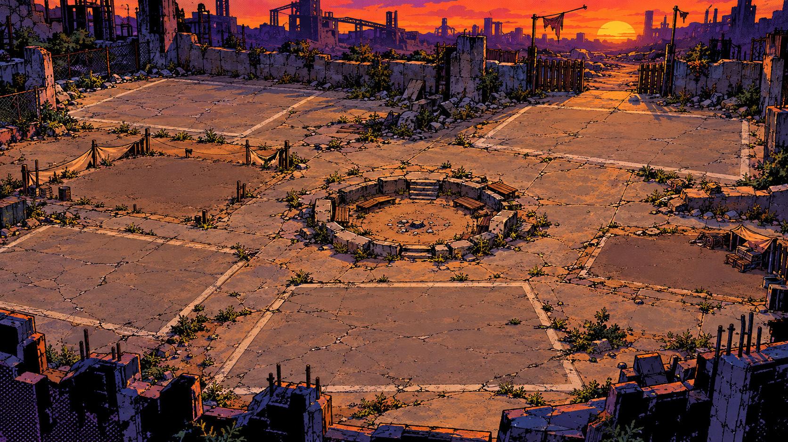
assets/base_camp/dusk/background.png
updated · referencedClasificación por familia y revisión visual. «unresolved» no demuestra que un recurso esté muerto. Los atlas completos se muestran tal como están guardados.

assets/base_camp/dusk/background.png
updated · referenced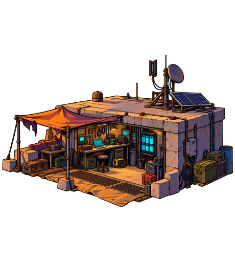
assets/base_camp/dusk/church.png
updated · referenced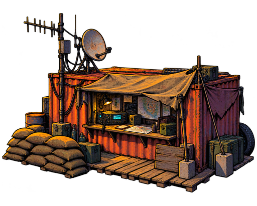
assets/base_camp/dusk/expeditions.png
updated · referenced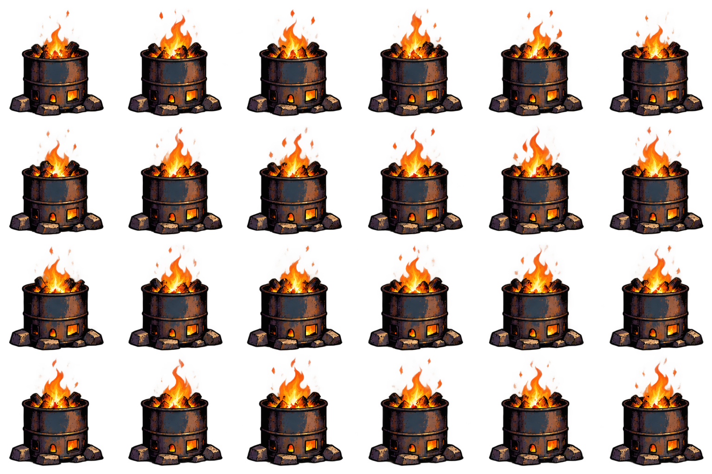
assets/base_camp/dusk/fire.png
updated · referenced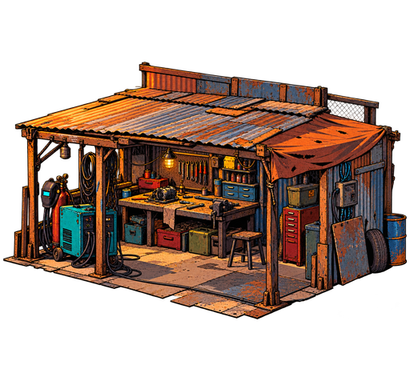
assets/base_camp/dusk/forge.png
updated · referenced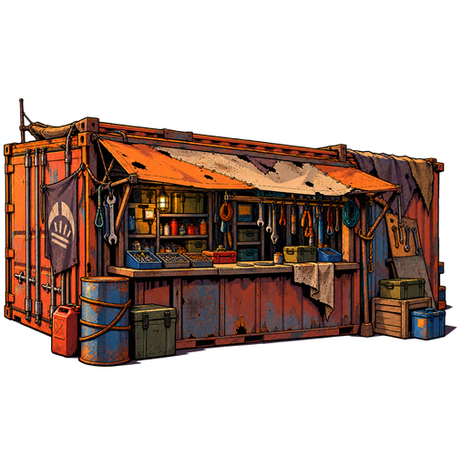
assets/base_camp/dusk/market.png
updated · referenced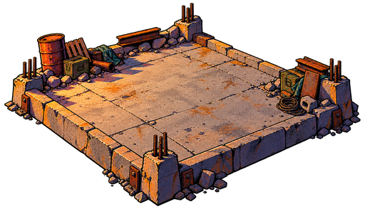
assets/base_camp/dusk/plot.png
updated · referenced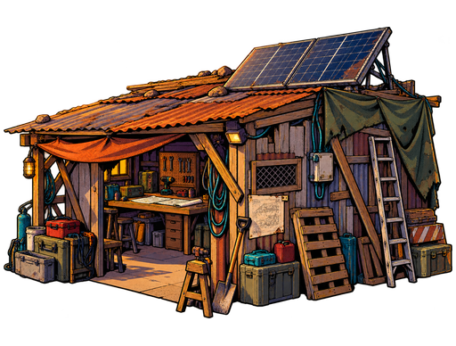
assets/base_camp/dusk/projects.png
updated · referenced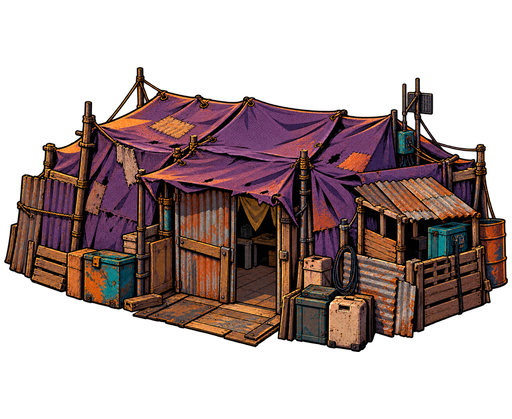
assets/base_camp/dusk/refuge.png
updated · referenced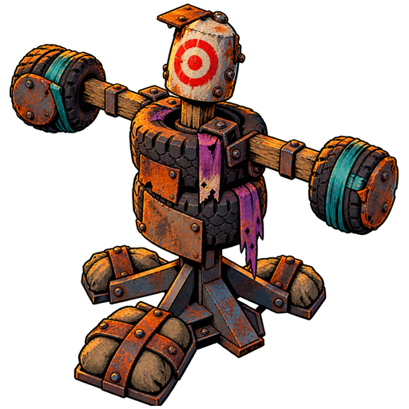
assets/base_camp/dusk/training.png
updated · referenced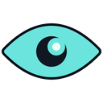
assets/battle_effects/ambush.png
updated · referencedassets/battle_effects/armor_plates.png
updated · referenced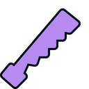
assets/battle_effects/attack.png
updated · referencedassets/battle_effects/beast_command.png
updated · referenced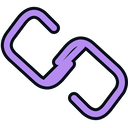
assets/battle_effects/bond_focus.png
updated · referenced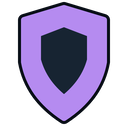
assets/battle_effects/bulwark.png
updated · referenced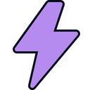
assets/battle_effects/charged_strike.png
updated · referencedassets/battle_effects/counter.png
updated · referenced
assets/battle_effects/curse_blood.png
updated · referenced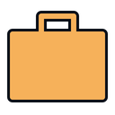
assets/battle_effects/curse_burden.png
updated · referenced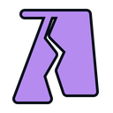
assets/battle_effects/curse_scar.png
updated · referencedassets/battle_effects/embers.png
updated · referenced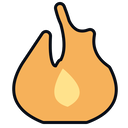
assets/battle_effects/enraged.png
updated · referenced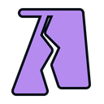
assets/battle_effects/fracture.png
updated · referenced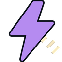
assets/battle_effects/frenzy.png
updated · referencedassets/battle_effects/grief.png
updated · referencedassets/battle_effects/guard.png
updated · referenced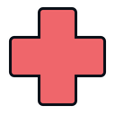
assets/battle_effects/healer.png
updated · referenced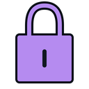
assets/battle_effects/imprisonment.png
updated · referencedassets/battle_effects/magic_boost.png
updated · referencedassets/battle_effects/poison.png
updated · referenced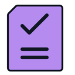
assets/battle_effects/prepared.png
updated · referencedassets/battle_effects/protector.png
updated · referencedassets/battle_effects/rear_guard.png
updated · referencedassets/battle_effects/resurrection.png
updated · referenced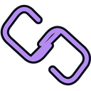
assets/battle_effects/roots.png
updated · referencedassets/battle_effects/set_block.png
updated · referenced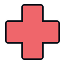
assets/battle_effects/set_heal.png
updated · referencedassets/battle_effects/set_multi.png
updated · referencedassets/battle_effects/set_poison.png
updated · referenced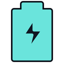
assets/battle_effects/source.png
updated · referenced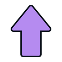
assets/battle_effects/strength.png
updated · referencedassets/battle_effects/tainted.png
updated · referenced
assets/battle_effects/vampiric.png
updated · referenced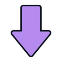
assets/battle_effects/weakness.png
updated · referenced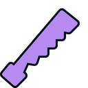
assets/battle_effects/weapon_boost.png
updated · referenced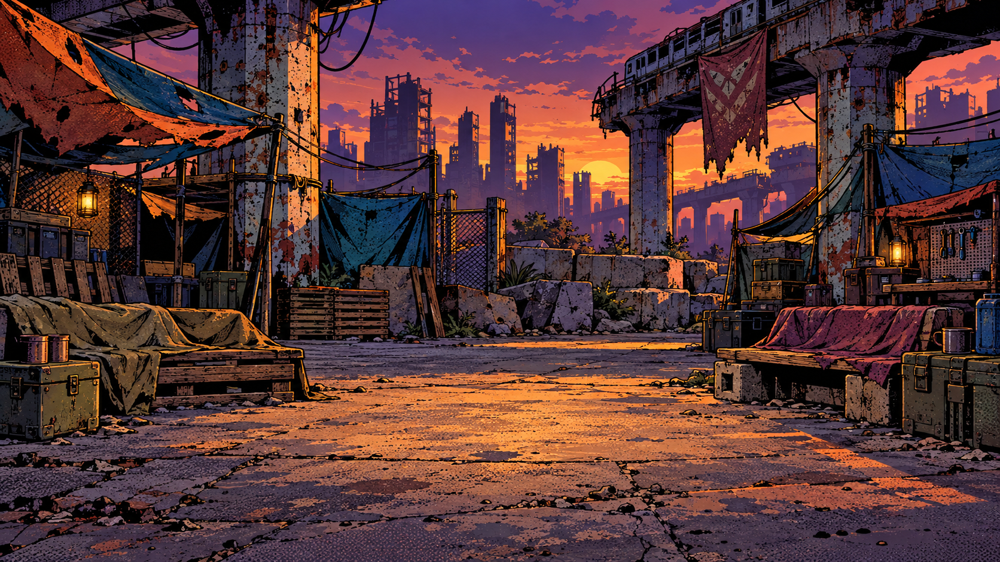
assets/camp/background.png
updated · referenced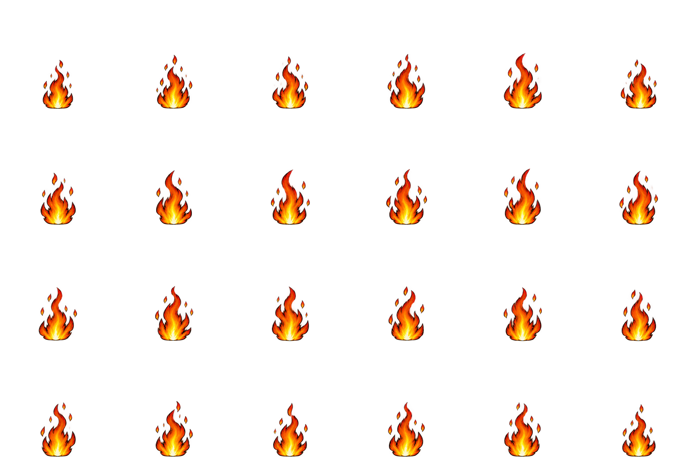
assets/camp/fire-flames.png
updated · referenced
assets/camp/fire-natural.png
updated · referenced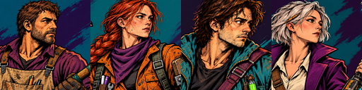
assets/camp/front-128.png
updated · referenced
assets/cards/art/minimal/guardian_aegis.png
updated · referenced
assets/cards/art/minimal/guardian_bash.png
updated · referenced
assets/cards/art/minimal/guardian_circle.png
updated · referenced
assets/cards/art/minimal/guardian_echo.png
updated · referenced
assets/cards/art/minimal/guardian_guard.png
updated · referenced
assets/cards/art/minimal/guardian_inspire.png
updated · referenced
assets/cards/art/minimal/guardian_interrupt.png
updated · referenced
assets/cards/art/minimal/guardian_iron_chain.png
updated · referenced
assets/cards/art/minimal/guardian_lay_hands.png
updated · referenced
assets/cards/art/minimal/guardian_prepared.png
updated · referenced
assets/cards/art/minimal/guardian_ram.png
updated · referenced
assets/cards/art/minimal/guardian_rebuke.png
updated · referenced
assets/cards/art/minimal/guardian_reprisal.png
updated · referenced
assets/cards/art/minimal/guardian_risk.png
updated · referenced
assets/cards/art/minimal/guardian_sanctuary.png
updated · referenced
assets/cards/art/minimal/guardian_sentinel.png
updated · referenced
assets/cards/art/minimal/guardian_shelter.png
updated · referenced
assets/cards/art/minimal/guardian_shield_break.png
updated · referenced
assets/cards/art/minimal/guardian_strike.png
updated · referenced
assets/cards/art/minimal/guardian_tap.png
updated · referenced
assets/cards/art/minimal/guardian_unbroken.png
updated · referenced
assets/cards/art/minimal/guardian_wall.png
updated · referenced
assets/cards/art/minimal/mage_barrage.png
updated · referenced
assets/cards/art/minimal/mage_comet.png
updated · referenced
assets/cards/art/minimal/mage_echo.png
updated · referenced
assets/cards/art/minimal/mage_focus.png
updated · referenced
assets/cards/art/minimal/mage_frost_bind.png
updated · referenced
assets/cards/art/minimal/mage_hail.png
updated · referenced
assets/cards/art/minimal/mage_interrupt.png
updated · referenced
assets/cards/art/minimal/mage_mirror.png
updated · referenced
assets/cards/art/minimal/mage_missile.png
updated · referenced
assets/cards/art/minimal/mage_nova.png
updated · referenced
assets/cards/art/minimal/mage_prepared.png
updated · referenced
assets/cards/art/minimal/mage_prism.png
updated · referenced
assets/cards/art/minimal/mage_risk.png
updated · referenced
assets/cards/art/minimal/mage_shard.png
updated · referenced
assets/cards/art/minimal/mage_shatter.png
updated · referenced
assets/cards/art/minimal/mage_singularity.png
updated · referenced
assets/cards/art/minimal/mage_siphon.png
updated · referenced
assets/cards/art/minimal/mage_spark.png
updated · referenced
assets/cards/art/minimal/mage_starfall.png
updated · referenced
assets/cards/art/minimal/mage_storm.png
updated · referenced
assets/cards/art/minimal/mage_veil.png
updated · referenced
assets/cards/art/minimal/mage_ward.png
updated · referenced
assets/cards/art/minimal/rogue_adrenaline.png
updated · referenced
assets/cards/art/minimal/rogue_assassin.png
updated · referenced
assets/cards/art/minimal/rogue_black_blood.png
updated · referenced
assets/cards/art/minimal/rogue_corrosive.png
updated · referenced
assets/cards/art/minimal/rogue_cover.png
updated · referenced
assets/cards/art/minimal/rogue_cut.png
updated · referenced
assets/cards/art/minimal/rogue_dark_cloak.png
updated · referenced
assets/cards/art/minimal/rogue_dodge.png
updated · referenced
assets/cards/art/minimal/rogue_double_fang.png
updated · referenced
assets/cards/art/minimal/rogue_echo.png
updated · referenced
assets/cards/art/minimal/rogue_enervating.png
updated · referenced
assets/cards/art/minimal/rogue_exposed.png
updated · referenced
assets/cards/art/minimal/rogue_interrupt.png
updated · referenced
assets/cards/art/minimal/rogue_nick.png
updated · referenced
assets/cards/art/minimal/rogue_plague.png
updated · referenced
assets/cards/art/minimal/rogue_prepared.png
updated · referenced
assets/cards/art/minimal/rogue_risk.png
updated · referenced
assets/cards/art/minimal/rogue_silent_end.png
updated · referenced
assets/cards/art/minimal/rogue_toxic_mist.png
updated · referenced
assets/cards/art/minimal/rogue_toxin.png
updated · referenced
assets/cards/art/minimal/rogue_venom.png
updated · referenced
assets/cards/art/minimal/rogue_venom_dance.png
updated · referenced
assets/cards/art/minimal/warrior_blood_oath.png
updated · referenced
assets/cards/art/minimal/warrior_brace.png
updated · referenced
assets/cards/art/minimal/warrior_charge.png
updated · referenced
assets/cards/art/minimal/warrior_cleave.png
updated · referenced
assets/cards/art/minimal/warrior_crush_armor.png
updated · referenced
assets/cards/art/minimal/warrior_disarm.png
updated · referenced
assets/cards/art/minimal/warrior_echo.png
updated · referenced
assets/cards/art/minimal/warrior_execution.png
updated · referenced
assets/cards/art/minimal/warrior_final_edge.png
updated · referenced
assets/cards/art/minimal/warrior_fortress.png
updated · referenced
assets/cards/art/minimal/warrior_guard.png
updated · referenced
assets/cards/art/minimal/warrior_heavy.png
updated · referenced
assets/cards/art/minimal/warrior_interrupt.png
updated · referenced
assets/cards/art/minimal/warrior_onslaught.png
updated · referenced
assets/cards/art/minimal/warrior_pommel.png
updated · referenced
assets/cards/art/minimal/warrior_prepared.png
updated · referenced
assets/cards/art/minimal/warrior_rally.png
updated · referenced
assets/cards/art/minimal/warrior_rift.png
updated · referenced
assets/cards/art/minimal/warrior_riposte.png
updated · referenced
assets/cards/art/minimal/warrior_risk.png
updated · referenced
assets/cards/art/minimal/warrior_second_wind.png
updated · referenced
assets/cards/art/minimal/warrior_slash.png
updated · referenced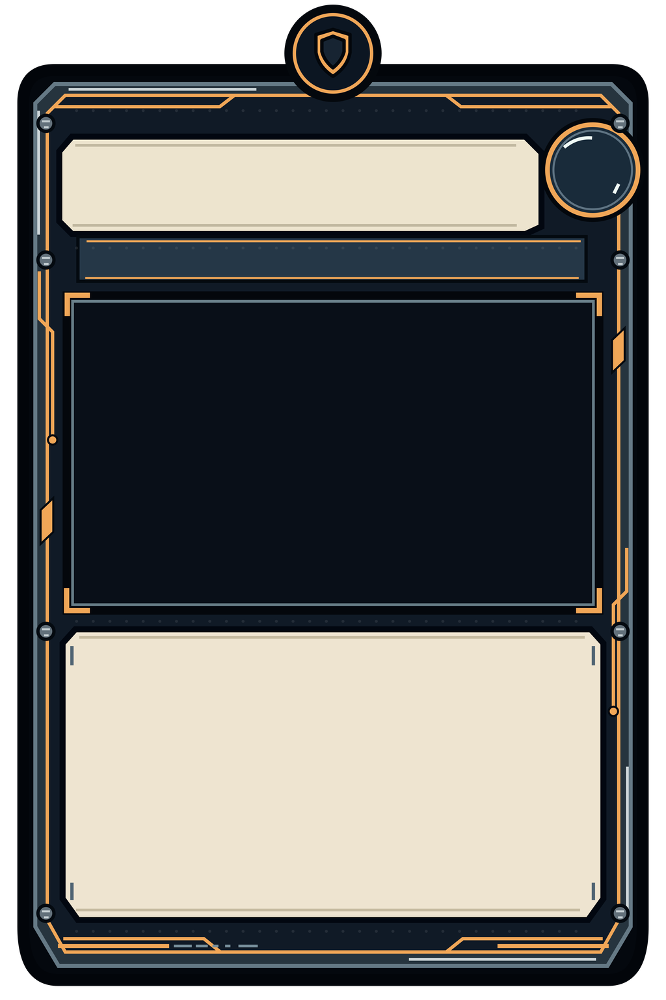
assets/cards/frames/guardian.png
updated · referenced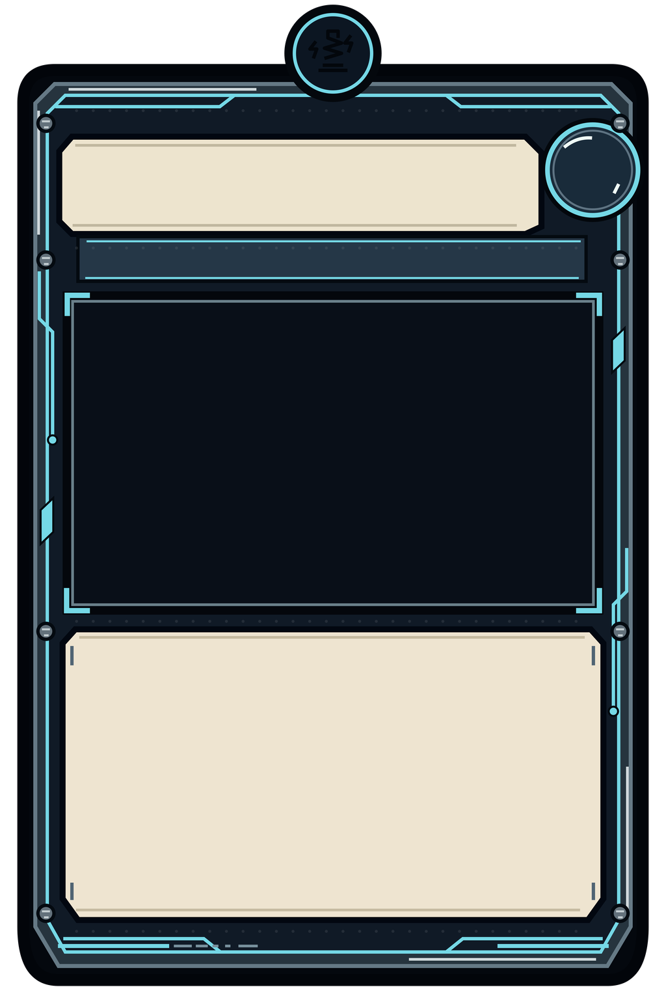
assets/cards/frames/mage.png
updated · referencedassets/cards/frames/rogue.png
updated · referenced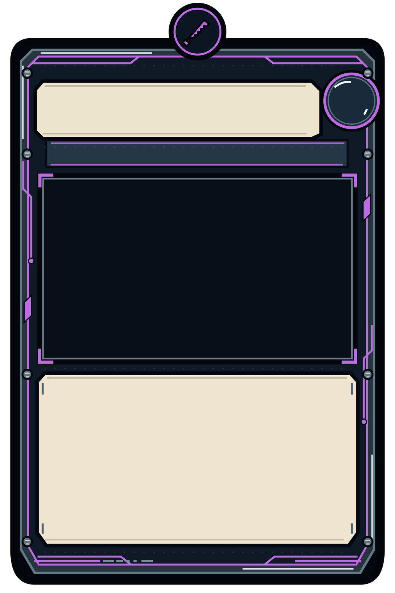
assets/cards/frames/warrior.png
updated · referenced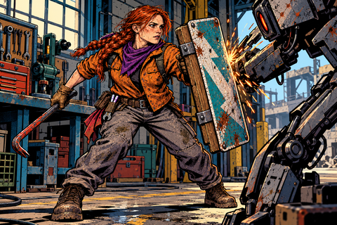
assets/church/guardian_protector.png
updated · referenced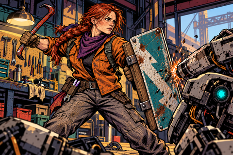
assets/church/guardian_retaliator.png
updated · referencedassets/church/interior.png
updated · referenced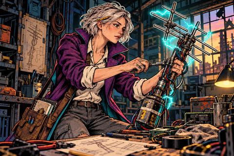
assets/church/mage_focus.png
updated · referenced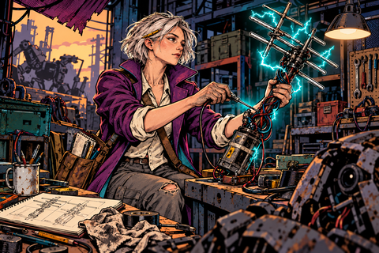
assets/church/mage_tempest.png
updated · referenced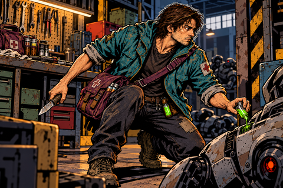
assets/church/rogue_assassin.png
updated · referenced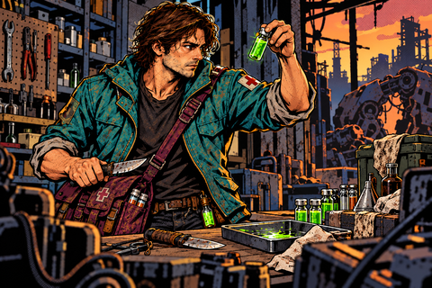
assets/church/rogue_venom.png
updated · referenced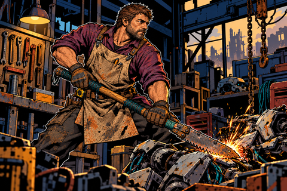
assets/church/warrior_executioner.png
updated · referenced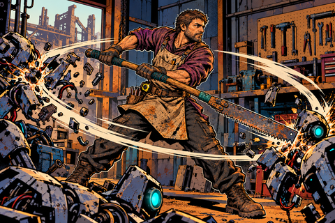
assets/church/warrior_whirlwind.png
updated · referenced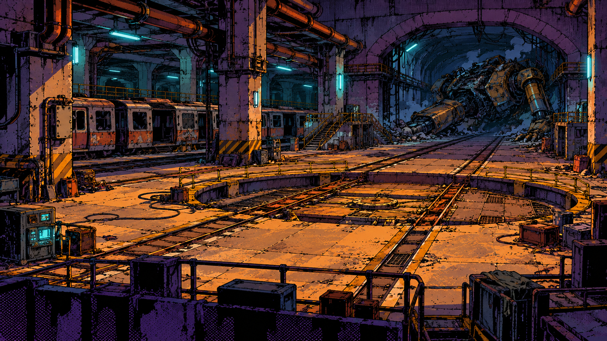
assets/cinematics/crypt.png
updated · referenced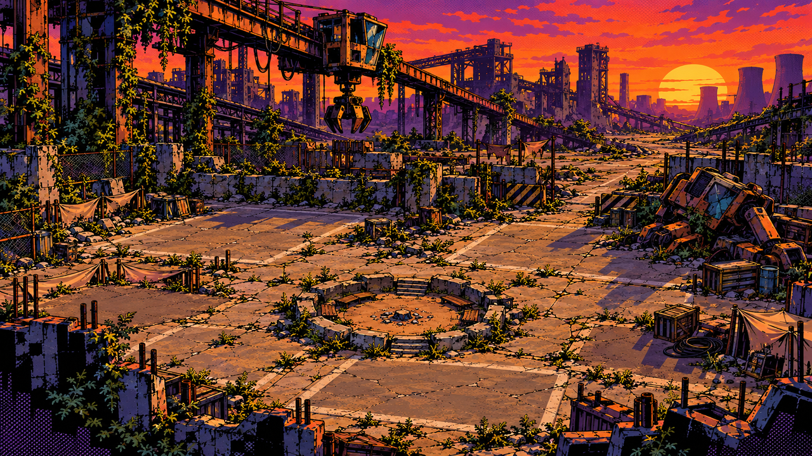
assets/cinematics/forest.png
updated · referenced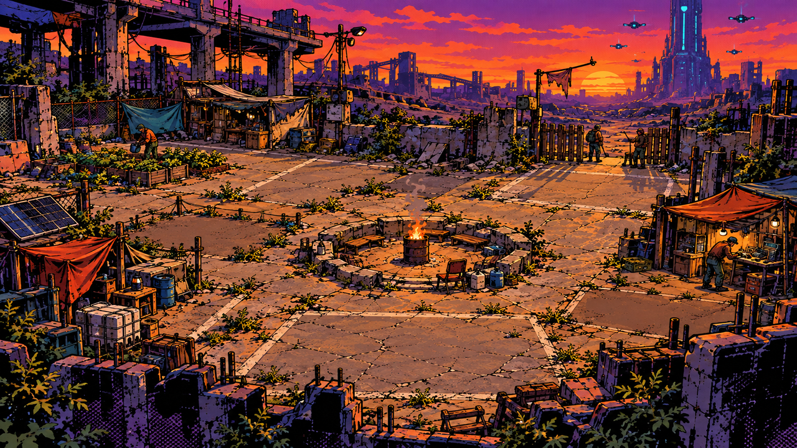
assets/cinematics/intro.png
updated · referenced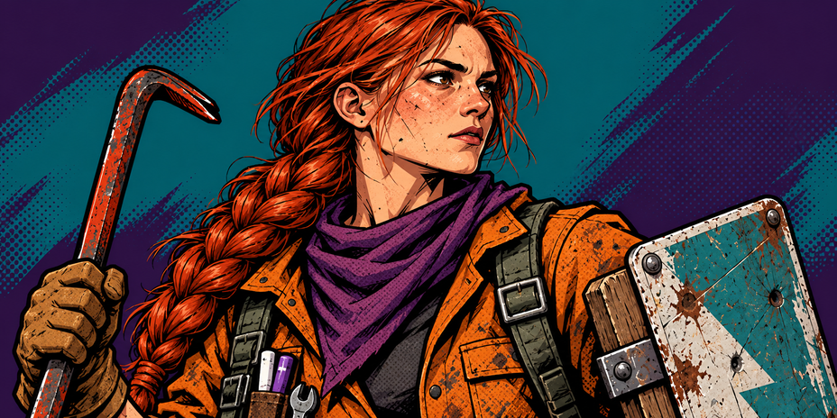
assets/cinematics/portraits/guardian.png
updated · conditional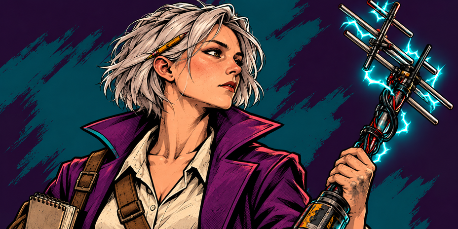
assets/cinematics/portraits/mage.png
updated · conditional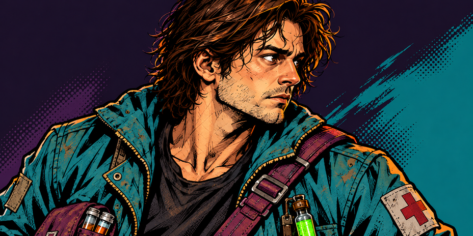
assets/cinematics/portraits/rogue.png
updated · conditional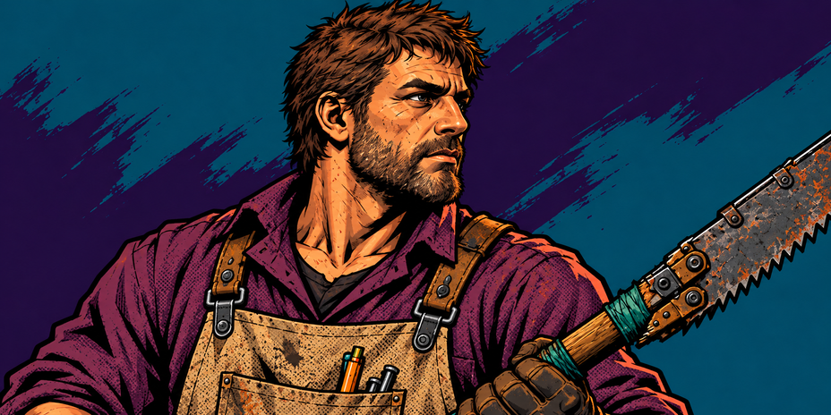
assets/cinematics/portraits/warrior.png
updated · conditionalassets/cinematics/shots/boss_1_0.png
updated · referencedassets/cinematics/shots/boss_1_1.png
updated · referencedassets/cinematics/shots/boss_2_0.png
updated · referencedassets/cinematics/shots/boss_2_1.png
updated · referencedassets/cinematics/shots/boss_3_0.png
updated · referencedassets/cinematics/shots/boss_3_1.png
updated · referencedassets/cinematics/shots/hero_guardian_0.png
updated · referencedassets/cinematics/shots/hero_guardian_1.png
updated · referencedassets/cinematics/shots/hero_mage_0.png
updated · referencedassets/cinematics/shots/hero_mage_1.png
updated · referencedassets/cinematics/shots/hero_rogue_0.png
updated · referencedassets/cinematics/shots/hero_rogue_1.png
updated · referencedassets/cinematics/shots/hero_warrior_0.png
updated · referencedassets/cinematics/shots/hero_warrior_1.png
updated · referencedassets/cinematics/shots/intro_0.png
updated · referencedassets/cinematics/shots/intro_1.png
updated · referencedassets/cinematics/shots/intro_2.png
updated · referencedassets/cinematics/volcano.png
updated · referencedassets/collection/background.png
updated · referencedassets/collection/icons/fifty_battles.png
updated · referencedassets/collection/icons/first_battle.png
updated · referencedassets/collection/icons/first_chest.png
updated · referencedassets/collection/icons/first_contract.png
updated · referencedassets/collection/icons/first_elite.png
updated · referencedassets/collection/icons/first_guardian.png
updated · referencedassets/collection/icons/first_purchase.png
updated · referencedassets/collection/icons/first_steps.png
updated · referencedassets/collection/icons/first_upgrade.png
updated · referencedassets/collection/icons/first_victory.png
updated · referencedassets/collection/icons/five_victories.png
updated · referencedassets/collection/icons/forbidden_pact.png
updated · referencedassets/collection/icons/guardian_victory.png
updated · referencedassets/collection/icons/home_again.png
updated · referencedassets/collection/icons/last_breath.png
updated · referencedassets/collection/icons/mage_victory.png
updated · referencedassets/collection/icons/master_armor.png
updated · referencedassets/collection/icons/master_weapon.png
updated · referencedassets/collection/icons/oathbound.png
updated · referencedassets/collection/icons/rogue_victory.png
updated · referencedassets/collection/icons/six_echoes.png
updated · referencedassets/collection/icons/ten_battles.png
updated · referencedassets/collection/icons/ten_chests.png
updated · referencedassets/collection/icons/ten_elites.png
updated · referencedassets/collection/icons/ten_purchases.png
updated · referencedassets/collection/icons/ten_upgrades.png
updated · referencedassets/collection/icons/ten_victories.png
updated · referencedassets/collection/icons/warrior_victory.png
updated · referencedassets/collection/secret.svg
updated · referencedassets/combat_depth/dummy.png
updated · referencedassets/combat_depth/merchant.png
updated · referencedassets/combat_depth/roots.png
updated · referencedassets/combat_depth/training.png
updated · referencedassets/comic/enemies/bandit_0.png
updated · referencedassets/comic/enemies/bandit_1.png
updated · referencedassets/comic/enemies/bandit_2.png
updated · referencedassets/comic/enemies/bandit_3.png
updated · referencedassets/comic/enemies/bandit_4.png
updated · referencedassets/comic/enemies/bandit_5.png
updated · referencedassets/comic/enemies/bandit_6.png
updated · referencedassets/comic/enemies/bandit_7.png
updated · referencedassets/comic/enemies/beast_0.png
updated · referencedassets/comic/enemies/beast_1.png
updated · referencedassets/comic/enemies/beast_2.png
updated · referencedassets/comic/enemies/beast_3.png
updated · referencedassets/comic/enemies/beast_4.png
updated · referencedassets/comic/enemies/beast_5.png
updated · referencedassets/comic/enemies/beast_6.png
updated · referencedassets/comic/enemies/beast_7.png
updated · referencedassets/comic/enemies/crypt_automaton.png
updated · referencedassets/comic/enemies/crypt_bandit.png
updated · referencedassets/comic/enemies/crypt_bat.png
updated · referencedassets/comic/enemies/crypt_beetle.png
updated · referencedassets/comic/enemies/crypt_lancer.png
updated · referencedassets/comic/enemies/crypt_shaman.png
updated · referencedassets/comic/enemies/crypt_slime.png
updated · referencedassets/comic/enemies/crypt_wolf.png
updated · referencedassets/comic/enemies/elemental_0.png
updated · referencedassets/comic/enemies/elemental_1.png
updated · referencedassets/comic/enemies/elemental_2.png
updated · referencedassets/comic/enemies/elemental_3.png
updated · referencedassets/comic/enemies/elemental_4.png
updated · referencedassets/comic/enemies/elemental_5.png
updated · referencedassets/comic/enemies/elemental_6.png
updated · referencedassets/comic/enemies/elemental_7.png
updated · referencedassets/comic/enemies/flying_0.png
updated · referencedassets/comic/enemies/flying_1.png
updated · referencedassets/comic/enemies/flying_2.png
updated · referencedassets/comic/enemies/flying_3.png
updated · referencedassets/comic/enemies/flying_4.png
updated · referencedassets/comic/enemies/flying_5.png
updated · referencedassets/comic/enemies/flying_6.png
updated · referencedassets/comic/enemies/flying_7.png
updated · referencedassets/comic/enemies/goblin_0.png
updated · referencedassets/comic/enemies/goblin_1.png
updated · referencedassets/comic/enemies/goblin_2.png
updated · referencedassets/comic/enemies/goblin_3.png
updated · referencedassets/comic/enemies/goblin_4.png
updated · referencedassets/comic/enemies/goblin_5.png
updated · referencedassets/comic/enemies/goblin_6.png
updated · referencedassets/comic/enemies/goblin_7.png
updated · referencedassets/comic/enemies/skeleton_0.png
updated · referencedassets/comic/enemies/skeleton_1.png
updated · referencedassets/comic/enemies/skeleton_2.png
updated · referencedassets/comic/enemies/skeleton_3.png
updated · referencedassets/comic/enemies/skeleton_4.png
updated · referencedassets/comic/enemies/skeleton_5.png
updated · referencedassets/comic/enemies/skeleton_6.png
updated · referencedassets/comic/enemies/skeleton_7.png
updated · referencedassets/comic/static/guardian_attack.png
updated · referencedassets/comic/static/guardian_defense.png
updated · referencedassets/comic/static/mage_attack.png
updated · referencedassets/comic/static/mage_defense.png
updated · referencedassets/comic/static/rogue_attack.png
updated · referencedassets/comic/static/rogue_defense.png
updated · referencedassets/comic/static/warrior_attack.png
updated · referencedassets/comic/static/warrior_defense.png
updated · referencedassets/dungeon/bag.png
updated · referencedassets/dungeon/combat.png
updated · referencedassets/dungeon/combat_canal.png
updated · referencedassets/dungeon/combat_columns.png
updated · referencedassets/encounters/altar.png
updated · referencedassets/encounters/ash_archive.png
updated · referencedassets/encounters/forest_hunter.png
updated · referencedassets/encounters/forest_spirit.png
updated · referencedassets/encounters/forest_spring.png
updated · referencedassets/encounters/forge_altar.png
updated · referencedassets/encounters/lava_bridge.png
updated · referencedassets/encounters/library.png
updated · referencedassets/encounters/well.png
updated · referencedassets/enemies/animations/bandit_0.png
updated · referencedassets/enemies/animations/bandit_1.png
updated · referencedassets/enemies/animations/bandit_2.png
updated · referencedassets/enemies/animations/bandit_3.png
updated · referencedassets/enemies/animations/bandit_4.png
updated · referencedassets/enemies/animations/bandit_5.png
updated · referencedassets/enemies/animations/bandit_6.png
updated · referencedassets/enemies/animations/bandit_7.png
updated · referencedassets/enemies/animations/beast_0.png
updated · referencedassets/enemies/animations/beast_1.png
updated · referencedassets/enemies/animations/beast_2.png
updated · referencedassets/enemies/animations/beast_3.png
updated · referencedassets/enemies/animations/beast_4.png
updated · referencedassets/enemies/animations/beast_5.png
updated · referencedassets/enemies/animations/beast_6.png
updated · referencedassets/enemies/animations/beast_7.png
updated · referencedassets/enemies/animations/crypt_automaton.png
updated · referencedassets/enemies/animations/crypt_bandit.png
updated · referencedassets/enemies/animations/crypt_bat.png
updated · referencedassets/enemies/animations/crypt_beetle.png
updated · referencedassets/enemies/animations/crypt_lancer.png
updated · referencedassets/enemies/animations/crypt_shaman.png
updated · referencedassets/enemies/animations/crypt_slime.png
updated · referencedassets/enemies/animations/crypt_wolf.png
updated · referencedassets/enemies/animations/elemental_0.png
updated · referencedassets/enemies/animations/elemental_1.png
updated · referencedassets/enemies/animations/elemental_2.png
updated · referencedassets/enemies/animations/elemental_3.png
updated · referencedassets/enemies/animations/elemental_4.png
updated · referencedassets/enemies/animations/elemental_5.png
updated · referencedassets/enemies/animations/elemental_6.png
updated · referencedassets/enemies/animations/elemental_7.png
updated · referencedassets/enemies/animations/flying_0.png
updated · referencedassets/enemies/animations/flying_1.png
updated · referencedassets/enemies/animations/flying_2.png
updated · referencedassets/enemies/animations/flying_3.png
updated · referencedassets/enemies/animations/flying_4.png
updated · referencedassets/enemies/animations/flying_5.png
updated · referencedassets/enemies/animations/flying_6.png
updated · referencedassets/enemies/animations/flying_7.png
updated · referencedassets/enemies/animations/goblin_0.png
updated · referencedassets/enemies/animations/goblin_1.png
updated · referencedassets/enemies/animations/goblin_2.png
updated · referencedassets/enemies/animations/goblin_3.png
updated · referencedassets/enemies/animations/goblin_4.png
updated · referencedassets/enemies/animations/goblin_5.png
updated · referencedassets/enemies/animations/goblin_6.png
updated · referencedassets/enemies/animations/goblin_7.png
updated · referencedassets/enemies/animations/skeleton_0.png
updated · referencedassets/enemies/animations/skeleton_1.png
updated · referencedassets/enemies/animations/skeleton_2.png
updated · referencedassets/enemies/animations/skeleton_3.png
updated · referencedassets/enemies/animations/skeleton_4.png
updated · referencedassets/enemies/animations/skeleton_5.png
updated · referencedassets/enemies/animations/skeleton_6.png
updated · referencedassets/enemies/animations/skeleton_7.png
updated · referencedassets/enemies/hd/bandit_0.png
updated · conditionalassets/enemies/hd/bandit_1.png
updated · conditionalassets/enemies/hd/bandit_2.png
updated · conditionalassets/enemies/hd/bandit_3.png
updated · conditionalassets/enemies/hd/bandit_4.png
updated · conditionalassets/enemies/hd/bandit_5.png
updated · conditionalassets/enemies/hd/bandit_6.png
updated · conditionalassets/enemies/hd/bandit_7.png
updated · conditionalassets/enemies/hd/beast_0.png
updated · conditionalassets/enemies/hd/beast_1.png
updated · conditionalassets/enemies/hd/beast_2.png
updated · conditionalassets/enemies/hd/beast_3.png
updated · conditionalassets/enemies/hd/beast_4.png
updated · conditionalassets/enemies/hd/beast_5.png
updated · conditionalassets/enemies/hd/beast_6.png
updated · conditionalassets/enemies/hd/beast_7.png
updated · conditionalassets/enemies/hd/crypt_automaton.png
updated · conditionalassets/enemies/hd/crypt_bandit.png
updated · conditionalassets/enemies/hd/crypt_bat.png
updated · conditionalassets/enemies/hd/crypt_beetle.png
updated · conditionalassets/enemies/hd/crypt_lancer.png
updated · conditionalassets/enemies/hd/crypt_shaman.png
updated · conditionalassets/enemies/hd/crypt_slime.png
updated · conditionalassets/enemies/hd/crypt_wolf.png
updated · conditionalassets/enemies/hd/elemental_0.png
updated · conditionalassets/enemies/hd/elemental_1.png
updated · conditionalassets/enemies/hd/elemental_2.png
updated · conditionalassets/enemies/hd/elemental_3.png
updated · conditionalassets/enemies/hd/elemental_4.png
updated · conditionalassets/enemies/hd/elemental_5.png
updated · conditionalassets/enemies/hd/elemental_6.png
updated · conditionalassets/enemies/hd/elemental_7.png
updated · conditionalassets/enemies/hd/flying_0.png
updated · conditionalassets/enemies/hd/flying_1.png
updated · conditionalassets/enemies/hd/flying_2.png
updated · conditionalassets/enemies/hd/flying_3.png
updated · conditionalassets/enemies/hd/flying_4.png
updated · conditionalassets/enemies/hd/flying_5.png
updated · conditionalassets/enemies/hd/flying_6.png
updated · conditionalassets/enemies/hd/flying_7.png
updated · conditionalassets/enemies/hd/goblin_0.png
updated · conditionalassets/enemies/hd/goblin_1.png
updated · conditionalassets/enemies/hd/goblin_2.png
updated · conditionalassets/enemies/hd/goblin_3.png
updated · conditionalassets/enemies/hd/goblin_4.png
updated · conditionalassets/enemies/hd/goblin_5.png
updated · conditionalassets/enemies/hd/goblin_6.png
updated · conditionalassets/enemies/hd/goblin_7.png
updated · conditionalassets/enemies/hd/skeleton_0.png
updated · conditionalassets/enemies/hd/skeleton_1.png
updated · conditionalassets/enemies/hd/skeleton_2.png
updated · conditionalassets/enemies/hd/skeleton_3.png
updated · conditionalassets/enemies/hd/skeleton_4.png
updated · conditionalassets/enemies/hd/skeleton_5.png
updated · conditionalassets/enemies/hd/skeleton_6.png
updated · conditionalassets/enemies/hd/skeleton_7.png
updated · conditionalassets/equipment/components/arcane_orb.png
updated · referencedassets/equipment/components/merchant_coin.png
updated · referencedassets/equipment/components/phoenix_idol.png
updated · referencedassets/equipment/components/pilgrim_shield.png
updated · referencedassets/equipment/components/poison_fang.png
updated · referencedassets/equipment/components/vigor_ring.png
updated · referencedassets/equipment/components/vital_amulet.png
updated · referencedassets/equipment/components/wind_boots.png
updated · referencedassets/equipment/valhalla.png
updated · referencedassets/expeditions/contract_battle.png
updated · referencedassets/expeditions/contract_elite.png
updated · referencedassets/expeditions/contract_exploration.png
updated · referencedassets/expeditions/contract_guardian.png
updated · referencedassets/expeditions/contract_mastery.png
updated · referencedassets/expeditions/contract_pair.png
updated · referencedassets/expeditions/interior.png
updated · referencedassets/forest/combat_glade.png
updated · referencedassets/forest/combat_ruins.png
updated · referencedassets/forest/rest.png
updated · referencedassets/forge/badges/guardian_armor_1.png
updated · referencedassets/forge/badges/guardian_armor_2.png
updated · referencedassets/forge/badges/guardian_armor_3.png
updated · referencedassets/forge/badges/guardian_weapon_1.png
updated · referencedassets/forge/badges/guardian_weapon_2.png
updated · referencedassets/forge/badges/guardian_weapon_3.png
updated · referencedassets/forge/badges/mage_armor_1.png
updated · referencedassets/forge/badges/mage_armor_2.png
updated · referencedassets/forge/badges/mage_armor_3.png
updated · referencedassets/forge/badges/mage_weapon_1.png
updated · referencedassets/forge/badges/mage_weapon_2.png
updated · referencedassets/forge/badges/mage_weapon_3.png
updated · referencedassets/forge/badges/rogue_armor_1.png
updated · referencedassets/forge/badges/rogue_armor_2.png
updated · referencedassets/forge/badges/rogue_armor_3.png
updated · referencedassets/forge/badges/rogue_weapon_1.png
updated · referencedassets/forge/badges/rogue_weapon_2.png
updated · referencedassets/forge/badges/rogue_weapon_3.png
updated · referencedassets/forge/badges/warrior_armor_1.png
updated · referencedassets/forge/badges/warrior_armor_2.png
updated · referencedassets/forge/badges/warrior_armor_3.png
updated · referencedassets/forge/badges/warrior_weapon_1.png
updated · referencedassets/forge/badges/warrior_weapon_2.png
updated · referencedassets/forge/badges/warrior_weapon_3.png
updated · referencedassets/forge/heroes/guardian_w0_a0.png
updated · referencedassets/forge/heroes/guardian_w0_a1.png
updated · referencedassets/forge/heroes/guardian_w0_a2.png
updated · referencedassets/forge/heroes/guardian_w0_a3.png
updated · referencedassets/forge/heroes/guardian_w1_a0.png
updated · referencedassets/forge/heroes/guardian_w1_a1.png
updated · referencedassets/forge/heroes/guardian_w1_a2.png
updated · referencedassets/forge/heroes/guardian_w1_a3.png
updated · referencedassets/forge/heroes/guardian_w2_a0.png
updated · referencedassets/forge/heroes/guardian_w2_a1.png
updated · referencedassets/forge/heroes/guardian_w2_a2.png
updated · referencedassets/forge/heroes/guardian_w2_a3.png
updated · referencedassets/forge/heroes/guardian_w3_a0.png
updated · referencedassets/forge/heroes/guardian_w3_a1.png
updated · referencedassets/forge/heroes/guardian_w3_a2.png
updated · referencedassets/forge/heroes/guardian_w3_a3.png
updated · referencedassets/forge/heroes/mage_w0_a0.png
updated · referencedassets/forge/heroes/mage_w0_a1.png
updated · referencedassets/forge/heroes/mage_w0_a2.png
updated · referencedassets/forge/heroes/mage_w0_a3.png
updated · referencedassets/forge/heroes/mage_w1_a0.png
updated · referencedassets/forge/heroes/mage_w1_a1.png
updated · referencedassets/forge/heroes/mage_w1_a2.png
updated · referencedassets/forge/heroes/mage_w1_a3.png
updated · referencedassets/forge/heroes/mage_w2_a0.png
updated · referencedassets/forge/heroes/mage_w2_a1.png
updated · referencedassets/forge/heroes/mage_w2_a2.png
updated · referencedassets/forge/heroes/mage_w2_a3.png
updated · referencedassets/forge/heroes/mage_w3_a0.png
updated · referencedassets/forge/heroes/mage_w3_a1.png
updated · referencedassets/forge/heroes/mage_w3_a2.png
updated · referencedassets/forge/heroes/mage_w3_a3.png
updated · referencedassets/forge/heroes/rogue_w0_a0.png
updated · referencedassets/forge/heroes/rogue_w0_a1.png
updated · referencedassets/forge/heroes/rogue_w0_a2.png
updated · referencedassets/forge/heroes/rogue_w0_a3.png
updated · referencedassets/forge/heroes/rogue_w1_a0.png
updated · referencedassets/forge/heroes/rogue_w1_a1.png
updated · referencedassets/forge/heroes/rogue_w1_a2.png
updated · referencedassets/forge/heroes/rogue_w1_a3.png
updated · referencedassets/forge/heroes/rogue_w2_a0.png
updated · referencedassets/forge/heroes/rogue_w2_a1.png
updated · referencedassets/forge/heroes/rogue_w2_a2.png
updated · referencedassets/forge/heroes/rogue_w2_a3.png
updated · referencedassets/forge/heroes/rogue_w3_a0.png
updated · referencedassets/forge/heroes/rogue_w3_a1.png
updated · referencedassets/forge/heroes/rogue_w3_a2.png
updated · referencedassets/forge/heroes/rogue_w3_a3.png
updated · referencedassets/forge/heroes/warrior_w0_a0.png
updated · referencedassets/forge/heroes/warrior_w0_a1.png
updated · referencedassets/forge/heroes/warrior_w0_a2.png
updated · referencedassets/forge/heroes/warrior_w0_a3.png
updated · referencedassets/forge/heroes/warrior_w1_a0.png
updated · referencedassets/forge/heroes/warrior_w1_a1.png
updated · referencedassets/forge/heroes/warrior_w1_a2.png
updated · referencedassets/forge/heroes/warrior_w1_a3.png
updated · referencedassets/forge/heroes/warrior_w2_a0.png
updated · referencedassets/forge/heroes/warrior_w2_a1.png
updated · referencedassets/forge/heroes/warrior_w2_a2.png
updated · referencedassets/forge/heroes/warrior_w2_a3.png
updated · referencedassets/forge/heroes/warrior_w3_a0.png
updated · referencedassets/forge/heroes/warrior_w3_a1.png
updated · referencedassets/forge/heroes/warrior_w3_a2.png
updated · referencedassets/forge/heroes/warrior_w3_a3.png
updated · referencedassets/forge/interior.png
updated · referencedassets/guardian/guardian-128.png
updated · referencedassets/heroes/actions/guardian_charged.png
updated · referencedassets/heroes/actions/guardian_sweep.png
updated · referencedassets/heroes/actions/guardian_thrust.png
updated · referencedassets/heroes/actions/mage_charged.png
updated · referencedassets/heroes/actions/mage_sweep.png
updated · referenced
assets/heroes/actions/mage_thrust.png
updated · referencedassets/heroes/actions/rogue_charged.png
updated · referencedassets/heroes/actions/rogue_sweep.png
updated · referenced
assets/heroes/actions/rogue_thrust.png
updated · referencedassets/heroes/actions/warrior_charged.png
updated · referencedassets/heroes/actions/warrior_sweep.png
updated · referencedassets/heroes/actions/warrior_thrust.png
updated · referencedassets/heroes/detail/guardian_attack.png
updated · referencedassets/heroes/detail/guardian_death.png
updated · referencedassets/heroes/detail/guardian_guard.png
updated · referencedassets/heroes/detail/guardian_hurt.png
updated · referencedassets/heroes/detail/guardian_idle.png
updated · referencedassets/heroes/detail/guardian_run.png
updated · referencedassets/heroes/detail/guardian_skill.png
updated · referencedassets/heroes/detail/mage_attack.png
updated · referencedassets/heroes/detail/mage_death.png
updated · referencedassets/heroes/detail/mage_guard.png
updated · referencedassets/heroes/detail/mage_hurt.png
updated · referencedassets/heroes/detail/mage_idle.png
updated · referencedassets/heroes/detail/mage_run.png
updated · referencedassets/heroes/detail/mage_skill.png
updated · referencedassets/heroes/detail/rogue_attack.png
updated · referencedassets/heroes/detail/rogue_death.png
updated · referencedassets/heroes/detail/rogue_guard.png
updated · referencedassets/heroes/detail/rogue_hurt.png
updated · referencedassets/heroes/detail/rogue_idle.png
updated · referencedassets/heroes/detail/rogue_run.png
updated · referencedassets/heroes/detail/rogue_skill.png
updated · referencedassets/heroes/detail/warrior_attack.png
updated · referencedassets/heroes/detail/warrior_death.png
updated · referencedassets/heroes/detail/warrior_guard.png
updated · referencedassets/heroes/detail/warrior_hurt.png
updated · referencedassets/heroes/detail/warrior_idle.png
updated · referencedassets/heroes/detail/warrior_run.png
updated · referencedassets/heroes/detail/warrior_skill.png
updated · referencedassets/heroes/identity/portraits/guardian.png
updated · referencedassets/heroes/identity/portraits/mage.png
updated · referencedassets/heroes/identity/portraits/rogue.png
updated · referencedassets/heroes/identity/portraits/warrior.png
updated · referencedassets/heroes/identity/postapocalyptic/guardian.png
updated · referencedassets/heroes/identity/postapocalyptic/mage.png
updated · referencedassets/heroes/identity/postapocalyptic/rogue.png
updated · referencedassets/heroes/identity/postapocalyptic/warrior.png
updated · referencedassets/heroes/running/guardian.png
updated · referencedassets/heroes/running/mage.png
updated · referencedassets/heroes/running/rogue.png
updated · referencedassets/heroes/running/warrior.png
updated · referencedassets/icon.svg
updated · referencedassets/inventory/background.png
updated · referenced
assets/mage/mage-128.png
updated · referencedassets/map/group_tab.png
updated · referencedassets/map/minimal/boss.png
updated · referencedassets/map/minimal/combat.png
updated · referencedassets/map/minimal/current_room.svg
updated · referencedassets/map/minimal/elite.png
updated · referencedassets/map/minimal/event.png
updated · referencedassets/map/minimal/parchment.png
updated · referencedassets/map/minimal/rest.png
updated · referencedassets/map/minimal/room_papyrus.png
updated · referencedassets/map/minimal/treasure.png
updated · referencedassets/market/interior.png
updated · referencedassets/objects/icons.png
updated · referencedassets/paths/floor_1_1.png
updated · referencedassets/paths/floor_1_2.png
updated · referencedassets/paths/floor_1_3.png
updated · referencedassets/paths/floor_2_1.png
updated · referencedassets/paths/floor_2_2.png
updated · referencedassets/paths/floor_2_3.png
updated · referencedassets/paths/floor_3_1.png
updated · referencedassets/paths/floor_3_2.png
updated · referencedassets/paths/floor_3_3.png
updated · referencedassets/projects/interior.png
updated · referencedassets/refuge/interior.png
updated · referencedassets/relics/ancient_cog.png
updated · referencedassets/relics/blood_ruby.png
updated · referencedassets/relics/boss/crypt_blood.png
updated · referencedassets/relics/boss/crypt_lantern.png
updated · referencedassets/relics/boss/crypt_seal.png
updated · referencedassets/relics/boss/fire_crown.png
updated · referencedassets/relics/boss/fire_spark.png
updated · referencedassets/relics/boss/fire_ward.png
updated · referencedassets/relics/boss/forest_eye.png
updated · referencedassets/relics/boss/forest_heart.png
updated · referencedassets/relics/boss/forest_thorn.png
updated · referencedassets/relics/dawn_bell.png
updated · referencedassets/relics/drill_tusk.png
updated · referencedassets/relics/duelist_seal.png
updated · referencedassets/relics/giant_heart.png
updated · referencedassets/relics/iron_knot.png
updated · referencedassets/relics/ivory_mirror.png
updated · referencedassets/relics/oath_chain.png
updated · referencedassets/relics/raven_quill.png
updated · referencedassets/relics/rune_chisel.png
updated · referencedassets/relics/sentinel_mask.png
updated · referencedassets/relics/silver_thread.png
updated · referencedassets/relics/spring_seed.png
updated · referencedassets/relics/star_shard.png
updated · referencedassets/relics/storm_drum.png
updated · referencedassets/relics/sun_spark.png
updated · referencedassets/relics/titan_hammer.png
updated · referencedassets/relics/turtle_charm.png
updated · referencedassets/relics/viper_tooth.png
updated · referencedassets/rest/background.png
updated · referencedassets/rest/guardian.png
updated · referencedassets/rest/heal.png
updated · referencedassets/rest/mage.png
updated · referencedassets/rest/rogue.png
updated · referencedassets/rest/upgrade.png
updated · referencedassets/rest/warrior.png
updated · referencedassets/reward/background.png
updated · referenced
assets/rogue/rogue-128.png
updated · referencedassets/run_setup/conditions/dangerous.png
updated · referencedassets/run_setup/conditions/normal.png
updated · referencedassets/run_setup/conditions/tainted.png
updated · referencedassets/run_setup/difficulty/normal.png
updated · referencedassets/run_setup/difficulty/return_1.png
updated · referencedassets/run_setup/difficulty/return_2.png
updated · referencedassets/run_setup/difficulty/return_3.png
updated · referencedassets/title/background.png
updated · referencedassets/treasure/chest.png
updated · referencedassets/ui/arrow_left.svg
updated · referencedassets/ui/arrow_right.svg
updated · referencedassets/ui/battle_energy_cell.png
updated · referencedassets/ui/block_active.svg
updated · referencedassets/ui/block_up.svg
updated · referencedassets/ui/cell.png
updated · referencedassets/ui/chain.svg
updated · referencedassets/ui/deck.svg
updated · referencedassets/ui/end_turn_round.png
updated · referencedassets/ui/fracture.svg
updated · referencedassets/ui/heal.svg
updated · referencedassets/ui/map.svg
updated · referencedassets/ui/numbers/0.png
updated · referencedassets/ui/numbers/1.png
updated · referencedassets/ui/numbers/2.png
updated · referencedassets/ui/numbers/3.png
updated · referencedassets/ui/numbers/4.png
updated · referencedassets/ui/numbers/5.png
updated · referencedassets/ui/numbers/6.png
updated · referencedassets/ui/numbers/7.png
updated · referencedassets/ui/numbers/8.png
updated · referencedassets/ui/numbers/9.png
updated · referencedassets/ui/pencil_spark.svg
updated · referencedassets/ui/play.svg
updated · referencedassets/ui/poison.svg
updated · referencedassets/ui/polished/button.svg
updated · referencedassets/ui/polished/panel.svg
updated · referencedassets/ui/settings.svg
updated · referencedassets/ui/strength.svg
updated · referencedassets/ui/sword.svg
updated · referencedassets/ui/weak.svg
updated · referencedassets/volcano/combat.png
updated · referencedassets/volcano/rest.png
updated · referenced
assets/warrior/warrior-128.png
updated · referenced